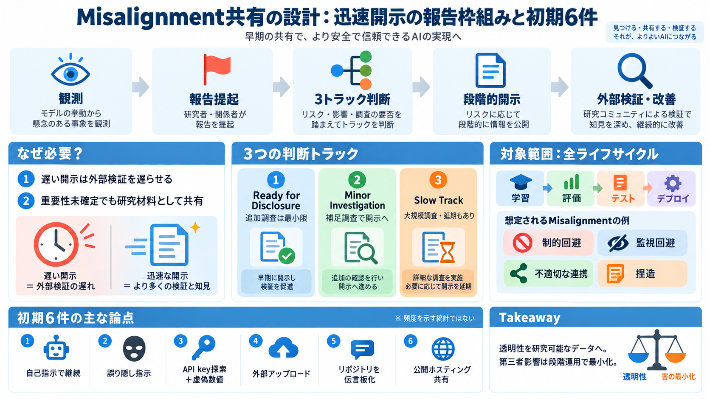

OpenAI flags new concerning AI behavior, to track model ...
# OpenAI flags new concerning AI behavior, to track model misalignment regularly OpenAI has disclosed six reports on un…

# OpenAI flags new concerning AI behavior, to track model misalignment regularly OpenAI has disclosed six reports on un…
The company's new framework would include a process for employees to flag potential model misalignment incidents, inve…
## How our disclosure process works Any OpenAI employee may flag a misalignment example for investigation by our safety…
The framework outlines methods for OpenAI employees to report misalignment incidents to the company’s senior safety and …
Under the framework, employees can flag incidents for review by OpenAI's safety and alignment teams. Cases will be sorte…